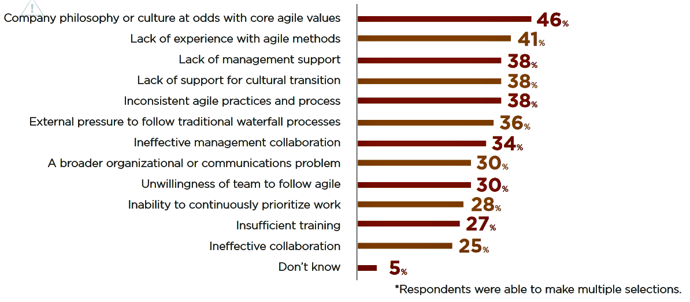
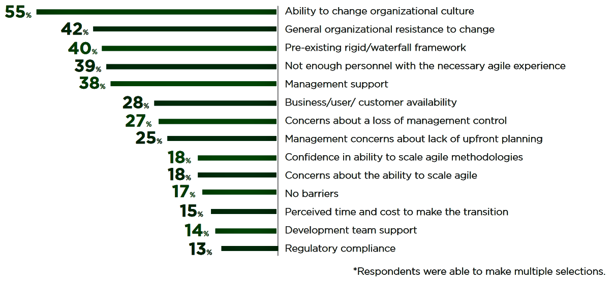

QA Ágil
---
Criado por Raphael Rodrigues
Agenda
Contexto ÁgilTeste Ágil
Time Evolução SOA
Mão na Massa
Contexto Ágil
Métodos e Práticas Ágil
Fonte: VersionOne 10thTécnicas Empregadas
Fonte: VersionOne 10thPorque Projetos Ágeis Falham
 Fonte: VersionOne 10thMaiores Barreiras para Adotação Ágil
 Fonte: VersionOne 10thTeste Ágil
Agile Testing
Teste Ágil é uma prática de teste de software que segue os princípios do desenvolvimento ágil,
integrando o teste no processo de desenvolvimento, em vez de mantê-lo como uma fase separada no ciclo de desenvolvimento.Princípios do Desenvolvimento Ágil
Feedback ContínuoEntrega de valor ao cliente
Comunicação face-to-face
Coragem
Simplicidade
Resposta a mudanças
Auto-organização
Foco em pessoas
integrando o teste no processo de desenvolvimento, em vez de mantê-lo como uma fase separada no ciclo de desenvolvimento.
Workflow Tarefas
Fonte: Atlassian Engine{kind=link}
Perfils de QAs
Negócio: ajudam o time a entender o contexto de negócio. BDD ou Especificação por Exemplo é uma das técnicas que eles usam para quebrar a barreira entre contexto de negócio e o contexto técnico.
Técnico: com muito conhecimento em automação de testes. Os QAs técnicos podem também trabalhar com testes de performance e segurança.
DevOps: introduzem a prática de entrega contínua e ajudam o time a criar um pipeline de integração contínua para receber um feedback mais rápido após cada commit.
Boas Práticas do Teste Ágil
Quadrante do Teste Ágil
Fonte: Adaptworks
{kind=link}
Pirâmide Teste Ágil
Fonte: Qualister
{kind=link}
Mão na Massa
Mão na Massa
- Separar grupos;
- Explicar o contexto
- Executar a "Sprint" (respeitando o timebox)
- Discutir os resultados
User Story
Como Colaborador em uma CentralizadoraQuero gerar o relatório de Informe de Rendimentos de um cooperado
Para visualizar o saldo do cooperado
Critério de Aceite
Usuário deve selecionar a consulta por "CPF/CNPJ" ou por "Conta".Usuário deve informar um CPF ou CNPJ para consultar os rendimentos. Caso não informe exibir o alerta "..."
Reforçando Especificação por Exemplo
[ Linguagem Gherkin ]Dado [condição]
Quando [ação]
Então [resultado]
Exemplo
Dado Colaborador em uma Centralizadora visualizando a tela "Gerar Informe de Rendimentos"Quando realiza uma consulta válida por "CPF/CNPJ"
Então sistema deve exibir o relatório de rendimentos da conta informada
Time Evolução Soa
Time Scrum
Atividades Durante a Sprint
Processo Durante a Sprint
| Nº Sprint | Dia 1,2 | Dia 3,4 | Dia 5-7 | Dia 8-10 |
|---|---|---|---|---|
| Sprint Anterior | Abrir Defeitos Review* | Automação | Automação | - |
| Sprint Atual | Refinar BDD | Testes manual | Testes manual | Testes manual |
| Sprint Seguinte | - | - | - | Escrever BDD |
Processo QA
 Fonte: Scrum Alliance
Fonte: Scrum Alliance
Como eu utilizo Especificação por Exemplo no time...
Visão Geral
Fonte: It's a Delivery ThingFonte
Agile Testing: A Practical Guide for Testers and Agile Teams by Lisa Crispin e Janet GregoryVersionOne 10th
The Case for Agile Testing
Specification by Example with Gherkin